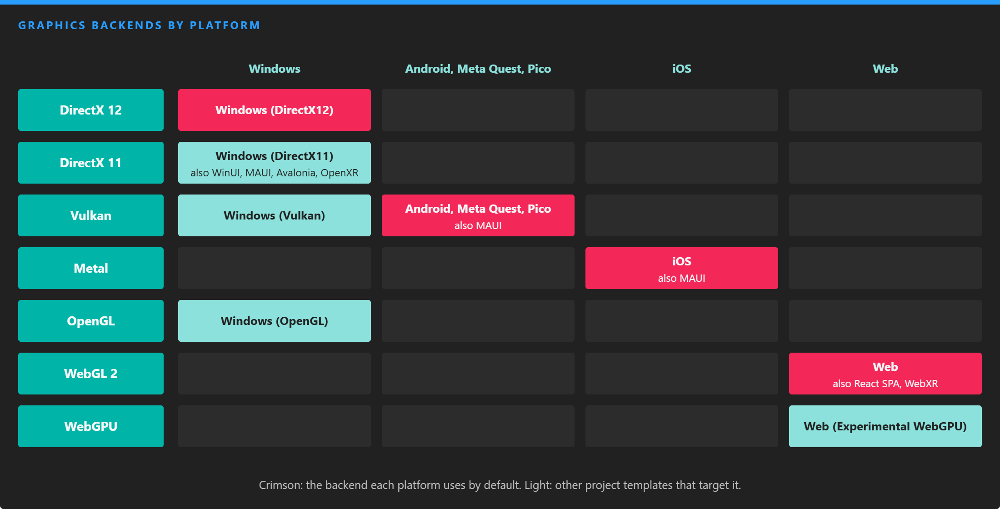

Supported Graphics Backends

Each platform has a default backend, and project templates add the others. Windows defaults to DirectX 12, Android and the standalone XR headsets to Vulkan, iOS to Metal and the web to WebGL 2.
Evergine renders through DirectX 12, DirectX 11, Vulkan, Metal, OpenGL and OpenGL ES, WebGL and WebGPU. Your scenes, materials and effects are the same on all of them: the low-level graphics API hides the differences, and effects written in HLSL are compiled or translated to each backend's shading language when needed.
You choose the backend through the project template of each profile. A project can have several profiles, for example Windows with DirectX 12 and Web with WebGPU, and Evergine Studio builds and runs each one from File > Build & Run.
| Backend | Platforms | Project templates | Compute | Ray tracing | Mesh shaders |
|---|---|---|---|---|---|
| DirectX 12 | Windows | Windows (DirectX12), the default | Yes | Device dependent | Device dependent |
| DirectX 11 | Windows | Windows (DirectX11), WinUI, MAUI, Avalonia, Windows OpenXR | Yes | No | No |
| Vulkan | Windows, Android | Android, Android Meta Quest, Android Pico, MAUI, Windows (Vulkan) | Yes | Device dependent | Device dependent |
| Metal | iOS | iOS, MAUI | Yes | No | No |
| OpenGL | Windows, Web (WebGL 2) | Web, React SPA, WebXR, Windows (OpenGL) | No | No | No |
| WebGPU | Web | Web (Experimental WebGPU) | Yes | No | No |
Templates in bold are the default for their platform.
Tip
Features such as ray tracing and mesh shaders depend on the device as well as on the backend. Check graphicsContext.Capabilities (IsRaytracingSupported, IsMeshShaderSupported, IsComputeShaderSupported...) at runtime rather than testing the backend type.
Options common to every backend
GraphicsContext has two settings that apply to all backends. Set them before calling CreateDevice(), in the Program.cs of the platform project:
| Property | Default | Description |
|---|---|---|
| ReverseZBuffer | true | Store depth reversed (1 at the near plane, 0 at the far one). It spreads depth precision far better and is what the default pipeline expects. |
| FramesInFlight | 0 | How many frames the CPU can prepare while the GPU is still working on earlier ones, counting the one being recorded. 0 disables the limit. With a value of 2 or 3, the graphics presenter waits on a fence per frame, which keeps latency bounded. |